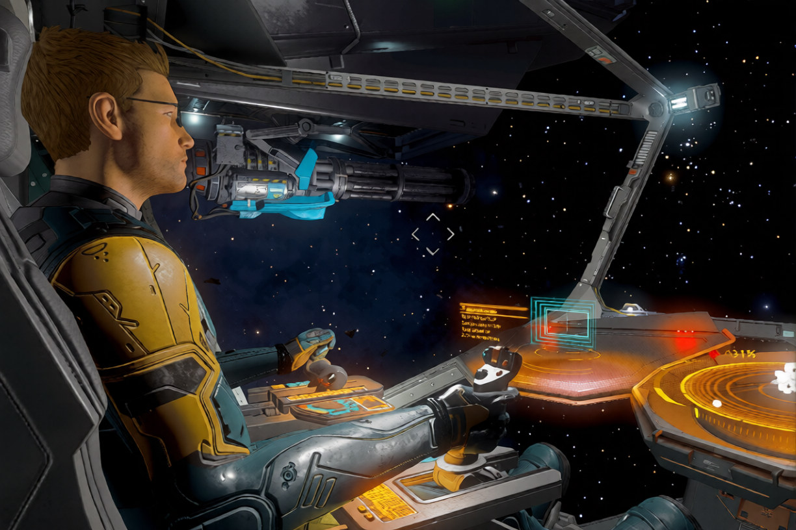

ТАМ, ГДЕ ПРОХОДИТ НАШ МАРШРУТ, НАЧИНАЕТСЯ ФРОНТИР

Frontier Ventures — это объединение независимых командиров
Мы — сообщество пилотов, для которых космос не просто карта, а поле для исследований, торговли и охоты за головами. Мы не привязаны к одной системе и не боимся дальних дорог. Наш дом — там, где проходит наш маршрут.
Мы верим, что космос создан для тех, кто готов идти вперёд
Открывать неизведанное, строить торговые пути, защищать справедливость и зарабатывать на этом. Мы не ждём, пока галактика изменится сама, — мы меняем её своими действиями.
Чем мы занимаемся
- Исследование неизведанных систем и картирование галактики
- Безопасная торговля и перевозка ценных грузов
- Охота на пиратов и защита торговых путей
- Поддержка BGS в домашней системе
Кого мы ищем
Мы открыты для пилотов любого опыта...
Как вступить
Свяжитесь с нами в Discord или отправьте заявку...
Наш дом
Домашняя система: ...
Платформа: PC / Xbox / PlayStation
Часовой пояс: МСК / UTC+3